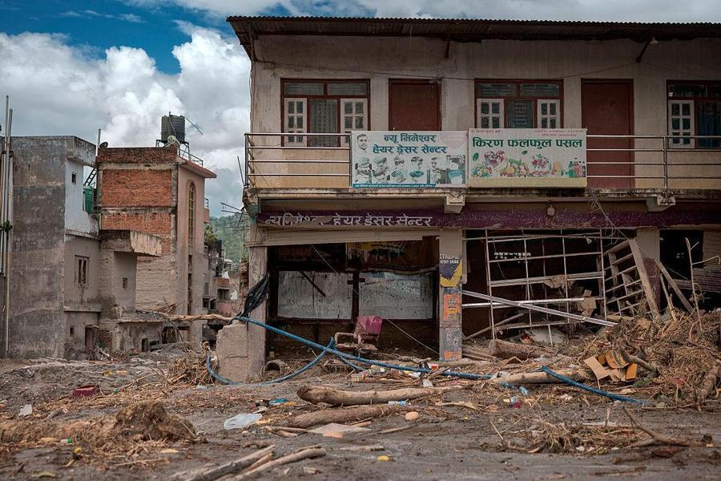
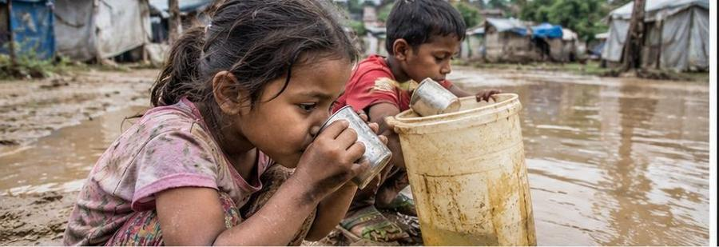
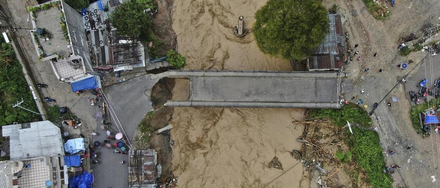

2026.09.21 기준
공동주관: 글로벌호프, 월드케어, 프로보노국재협력재단
기후 재난대응 모금캠페인
네팔의 일상을 이어주세요.
또 다른 위기대응의 시작, 기후변화로 빙하홍수 피해를 입은 네팔에 구호 모금 및 2차 대응 캠페인을 진행합니다.
지금 재난대응에 후원하기CRISIS
'도망쳐!' 외침조차
삼켜버린 흙더미
2026년 8월 26일 아침, 히말라야의 빙하가 무너졌습니다. 얼음과 바위, 흙더미가 강을 타고 마을을 덮쳤습니다. 가족과 걷던 길, 친구들과 공부하던 학교, 이웃을 만나던 시장이 한순간에 사라졌습니다.
살아남은 사람들의 시간은 그날에 멈춰 있습니다. 물은 빠졌지만, 길과 다리, 집과 일터는 돌아오지 않았습니다.
자연의 역습
해발 5,000m 빙하 붕괴. 시속 180km 진흙 급류가 덮쳐 대피 시간이 없었습니다.
사상 최악의 참사
홍수 재난으로 인해 1,453명의 사망자와 6,664명의 실종자가 발생했습니다. (9월21일 기준)
소멸된 삶의 터전
라수와, 누와코트, 다딩, 고르카, 타나훈, 치트완 지역 국가 재난 위기 선포.
이재민들의 모든 생계 기반이 사라졌습니다.
3 REALITIES
수해민들이 마주한
더 가혹한 3가지 현실

REALITY 01
시장과 은행이 무너져
돈이 있어도 살 곳도 살 것도 없습니다

REALITY 02
취수원과 상수도망의 파괴로 25,000명이
오염된 물을 마시고 있습니다

REALITY 03
도로 42km, 교량 30여 개가 끊겨
구호물자가 갇혀 있습니다
Sustainable Development Goals
지속적인 n차 대응이
필요합니다.
구호는 한 번, 회복은 여러 단계입니다
재난 직후의 긴급구호가 끝나도, 일상이 회복되기까지는 시간이 걸립니다. 단계마다 필요한 것이 다르기 때문에, 지원도 이어져야 합니다.
긴급구호 — 생명을 지키는 단계
식수, 식량, 위생용품
겨울나기 — 안전하게 머무는 단계
방한물품, 임시 거처
회복과 대비 — 일상을 되찾는 단계
생계와 배움의 회복, 다음 재난에 대한 대비
OUR RESPONSE
한번 일어난 재난은,
회복까지 여러 번의 손길로 완성됩니다.
소중한 후원금은 네팔 현장에서 깨끗한 물, 겨울나기 임시 거처,
일상의 회복까지 가장 필요한 곳에 전달됩니다.
01
청년대사
현장조사
청년 인력을 현지에 파견해 실태를
직접 확인하고, 조사 결과를 콘텐츠화
02
자원동원
모금후원
대중과 기업을 대상으로
모금을 통해재원을 마련
03
컨테이너
현물기부
현장에 필요한 물품을 컨테이너
단위로 확보해 현지에 발송
04
볼런투어
전문봉사
전문성을 갖춘 봉사 인력이
여행 형태로 결합해 현지에서 직접 활동
HOW TO HELP
어떤 내일을
선물하시겠습니까?
식량키트 지원
30,000원
즉석 비상식량과 영유아 영양 치료식 제공
의약물품 지원
50,000원
정수 필터, 비누, 수액 세트
생활물품 지원
100,000원
방한 담요, 아동 물품, 여성 위생 패드 키트
주거공간 지원
300,000원
가옥 수리 도구, 아동 친화 보호 공간 조성
HOW TO HELP
현장 봉사단으로
함께하는 방법
재능기부
교육, 문화예술 지원
의료봉사
양·한방 의약품 지원
복구작업
마을, 건축 리모델링 지원
구호품 전달
현장에 직접 구호물품 지원
모집정원: 30명 미만
모집기간: 추후 공지 (별도 안내 예정)
50+ COUNTRIES
50개국 글로벌 맞춤형
지원과 일상 회복
케냐
지역사회 특성을 반영한 회복 지원 시스템 구축
마다가스카르
현지 상황에 완벽히 맞춘 구호 물품 체계 운영
필리핀
식사·생활용품·치료 등 개인 단위 세밀한 필요 파악
우즈베키스탄
공공보건사업 추진
그 외 50여 개국에
지원과 일상의 회복을 도왔습니다.
TOGETHER
재난은 한순간에 일어나지만,
회복은 오랜 시간이 필요합니다.
지금 네팔의 누군가는 안전한 곳에서 밤을 보내기 위한 공간이 필요하고, 누군가는 한 끼의 식사를, 누군가는 치료를 기다리고 있습니다.
우리가 보내는 후원금 하나하나는 한 사람의 식사, 한 가족의 생활용품, 한 가정의 안전한 내일이 됩니다.
작은 나눔도 모이면 큰 힘이 됩니다
모두가 떠난 진흙더미 위, 네팔의 회복 함께하기네팔 긴급구호 후원하기
방법 1. 계좌후원
후원계좌 │ 신한은행 140-009-442057
예금주 │ (사)프로보노국제협력재단
입금명 │ 이름_네팔
방법 2. 홈페이지 지정후원
상단 후원하기 버튼 클릭 > 지정후원
"재난을 넘어, 다시 일상으로."
네팔의 오늘을 지키고 내일의 희망을 이어가는 일에
여러분의 따뜻한 마음을 보태주세요.
Probono International Cooperation Organization